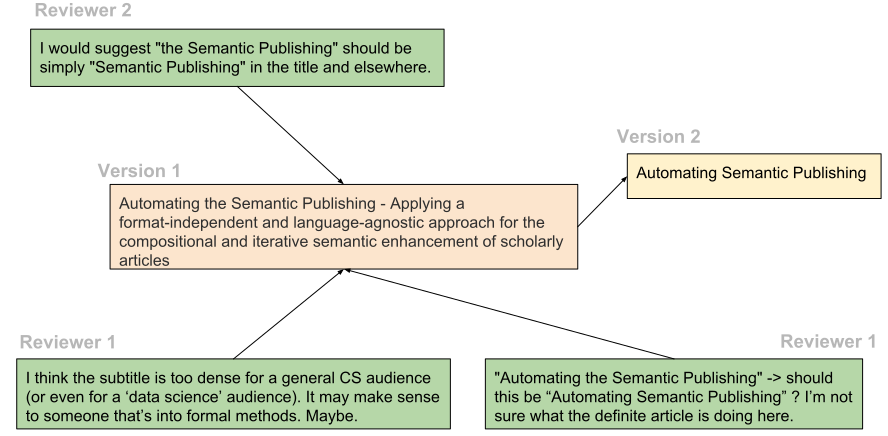

Linkflows (bi-monthly) Meeting
18th October 2018
"Bi-monthly" project updates
Web Sci ' 18
|
ACM WebSci'18 abstract
ESWC ' 18
|
ESWC'18 DC paper
ISWS ' 18
|
Current work
How can we model the [decentralized] execution of workflows by using Linked Data principles and tools?Approach
- Develop a simple model for linked workflows → linkflows
- Choose sample articles to test the approach on
- Evaluate model with sample articles
- Draft v0.1(read with a big grain of salt!)
General idea

Linkflows model

Model sample paper

Ontologies used
- PROV-O: Provenance Ontology
- SPAR suite: OWL 2 DL ontologies for the publishing domain
- FAIR*reviews ontology
- Web Annotation Data Model
- And others...
Incomplete view of network


Compatible representations

|
Fine-grained interconnected parts of knowledge; e.g. nanopublications |
Linkflows model evaluation
- Evaluation notes
- Granular reviews address snippets of text
- The chain of changes that one or more reviews launched
- Sentiment of a review: positive, neutral, negative
- "Ground truth": peer-review rating of own written review
- Use crowd/experts to see if reviews were addressed
Changes: example 1
Changes: example 2
Changes: example 3
Useful links
- ESWC'18 DC paper: Springer, PDF
- WebSci'18 extended abstract: Google Drive, slide and poster
- Linkflows model repository